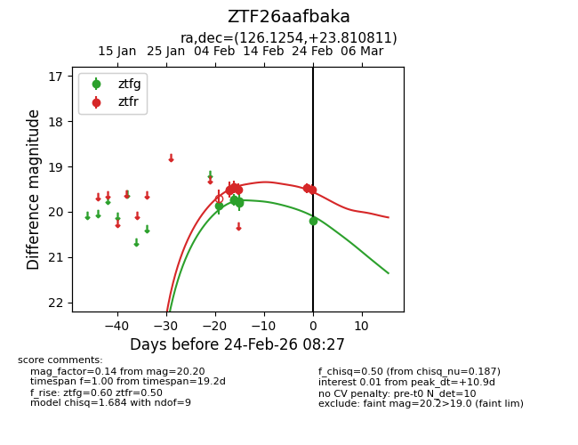
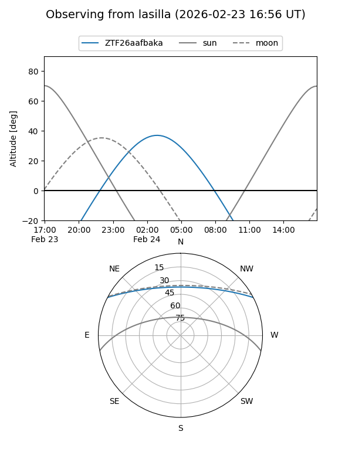
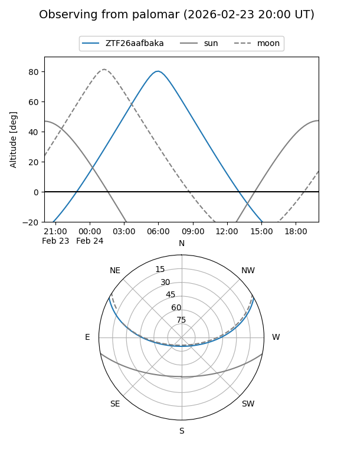

ZTF26aafbaka
Target ZTF26aafbaka at 2026-02-24 09:08
Aliases and brokers:
FINK: link
Lasair: link
ALeRCE: link
alt names
ZTF26aafbaka (ztf,fink_ztf)
Coordinates:
equatorial (ra, dec) = 126.1254,+23.81081
equatorial (HMS+DMS) = 08:24:30.09,+23:48:38.92
galactic (l, b) = (199.9009,+30.37855)
Flags:
Photometry:
last ztfg=20.20, ztfr=19.51
6 ztfg, 7 ztfr detections
Lightcurve

Visibility


Additional plots